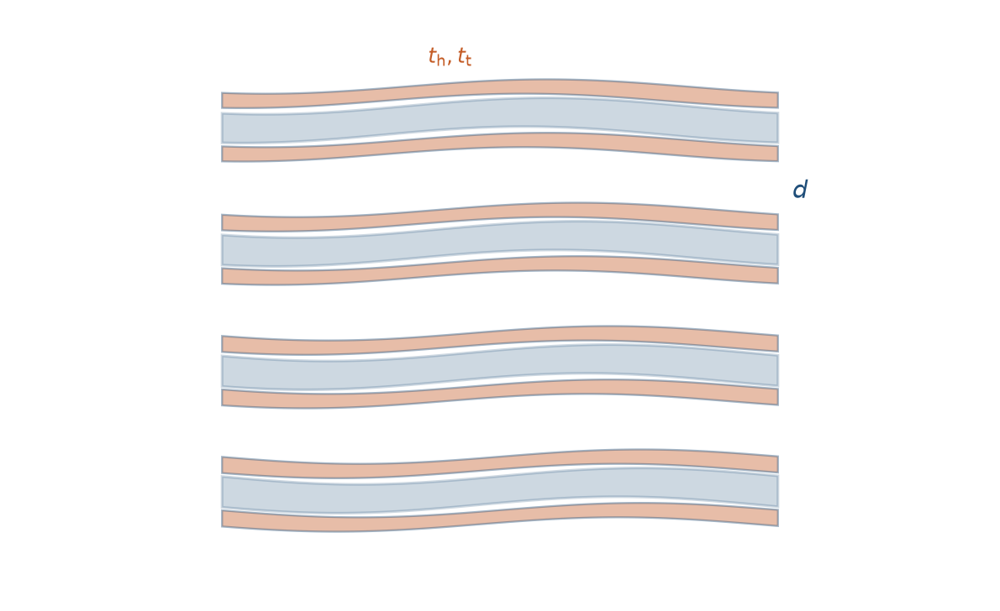
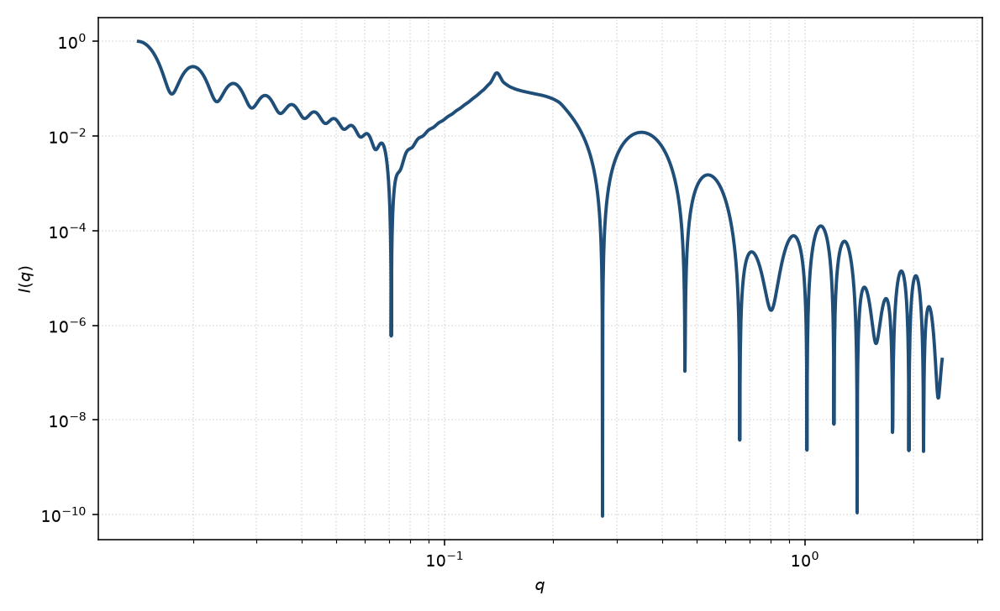

头基–尾链 Caille 堆叠
lamellar HG stack Caille
适用场景
多层双层既需要头基–尾链两段衬度，又需要 Caille 热起伏堆叠时，把头–尾–头形式因子与 Caille $S(q)$ 相乘。这是溶致层状相与多层脂质体最常用的组合：低 $q$ 峰形反映弹性起伏，高 $q$ 漫散射与峰强度比反映双层剖面。
若只要平均厚度、对比不足，退回均匀 Caille 堆叠。无层状峰时退回头基–尾链孤立片。多层同心囊泡有曲率与闭合几何，应改多层囊泡，而不是无限平面堆叠。
物理图像
Nallet 的要点是形式与结构可分离：粉末强度 $\propto |F_{\mathrm{HG}}(q)|^2 S_{\mathrm{Caille}}(q)/q^2$。$F_{\mathrm{HG}}$ 与头基–尾链页相同；$S_{\mathrm{Caille}}$ 与 Caille 堆叠页相同。布拉格峰强度被 $|F|$ 调制，节点附近整级峰可以消失，并不等于 $\eta$ 极大。
对比变化改 $F$ 而不应改 $d,\eta,N$（同一套弹性与畴）。若对比一变峰位也动，多半是溶胀或相变，不是单纯衬度。
示意图


核心公式
出发点
粉末层状相的强度可分离为双层形式因子与层间结构因子。法向剖面仍是头–尾–头两段矩形，一维振幅 $F(q)=\int\Delta\rho(z)\,\mathrm{e}^{iqz}\,\mathrm{d}z$。层心 $z_n=nd+u_n$ 的热起伏由 Caille 关联器描述：
$$\bigl\langle[u_n-u_0]^2\bigr\rangle=\frac{\eta d^2}{2\pi^2}\bigl[\gamma_{\mathrm{E}}+\ln(\pi n)\bigr],\qquad\eta=\frac{q_0^2 k_{\mathrm{B}}T}{8\pi\sqrt{K\bar{B}}},\quad q_0=\frac{2\pi}{d}.$$横向无限给出与均匀片相同的 Lorentz $2\pi/q^2$。约束 $t_{\mathrm{bil}}=t_{\mathrm{t}}+2t_{\mathrm{h}}\lt d$，溶剂间隙为 $d-t_{\mathrm{bil}}$。
推导
偶函数剖面只贡献余弦。尾链积分给出 $\Delta\rho_{\mathrm{t}} t_{\mathrm{t}}\,\mathrm{sinc}(qt_{\mathrm{t}}/2)$；两侧头基积分经和差化积给出相位 $\cos\bigl(q(t_{\mathrm{t}}+t_{\mathrm{h}})/2\bigr)$。对称双层振幅
$$F(q)=\Delta\rho_{\mathrm{t}} t_{\mathrm{t}}\,\mathrm{sinc}\!\left(\frac{q t_{\mathrm{t}}}{2}\right)+2\Delta\rho_{\mathrm{h}} t_{\mathrm{h}}\,\mathrm{sinc}\!\left(\frac{q t_{\mathrm{h}}}{2}\right)\cos\!\left(\frac{q(t_{\mathrm{t}}+t_{\mathrm{h}})}{2}\right),$$其中 $\Delta\rho_{\mathrm{t}}=\rho_{\mathrm{t}}-\rho_{\mathrm{s}}$，$\Delta\rho_{\mathrm{h}}=\rho_{\mathrm{h}}-\rho_{\mathrm{s}}$，$\mathrm{sinc}\,x=\sin x/x$。层间：高斯位移的特征函数 $\exp(-q^2\langle[u_n-u_0]^2\rangle/2)$ 代入关联器，有限 $N$ 对求和即 Nallet 的 Caille $S(q)$
$$S(q)=N+2\sum_{n=1}^{N-1}(N-n)\cos(nqd)\,\exp\!\left(-\frac{\eta q^2 d^2}{4\pi^2}\bigl[\gamma_{\mathrm{E}}+\ln(\pi n)\bigr]\right).$$粉末强度（绝对前置因子收进 $\mathrm{scale}$）
$$I(q)=\frac{2\pi}{d q^2}\,|F(q)|^2\,S(q)+B.$$对比变化只改 $F$，不应改 $d,\eta,N$。若 $\Delta\rho_{\mathrm{t}}=\Delta\rho_{\mathrm{h}}$，则 $|F|^2\to(\Delta\rho)^2 t_{\mathrm{bil}}^2 P_{\mathrm{t}}$，退回均匀 Caille 堆叠。
低 $q$ 与渐近
布拉格位置仍是 $q_n=2\pi n/d$，有效指数 $\eta_n=n^2\eta$。峰附近 $S\sim|q-q_n|^{\eta_n-2}$，粉末峰带幂律尾。峰强度被 $|F(q_n)|^2$ 调制：双层节点处整级峰可以消失，并不等于 $\eta$ 极大。
$F(0)=\Delta\rho_{\mathrm{t}} t_{\mathrm{t}}+2\Delta\rho_{\mathrm{h}} t_{\mathrm{h}}$。$\eta\to 0$ 时 $S$ 回到 Laue 函数，$S(0)=N^2$。高 $q$ 包络由两段 $\mathrm{sinc}$ 决定，Lorentz 与 $|F|^2$ 合起来给出振荡 Porod $\sim q^{-4}$。
参数表
| 参数 | 符号 | 含义 | 单位 | 典型范围 |
|---|---|---|---|---|
| 层间距 | $d$ | 重复周期 | Å | 大于 $t_{\mathrm{bil}}$ |
| 畴内层数 | $N$ | 相干堆叠片数 | — | 5–100 |
| Caille 参数 | $\eta$ | 热起伏强度 | 无量纲 | $0.01$–$0.4$ |
| 尾链 / 头基厚度 | $t_{\mathrm{t}},t_{\mathrm{h}}$ | 双层两段厚度 | Å | 同头基–尾链页 |
| 两段 SLD | $\rho_{\mathrm{t}},\rho_{\mathrm{h}},\rho_{\mathrm{s}}$ | 尾链、头基、溶剂 | Å$^{-2}$ | 对比实验约束 |
| 极角 / 方位角 | $\theta,\phi$ | 层法向（二维） | 度 | 取向样品才独立 |
拟合注意
取向、畴大小与 $\eta$ 的分工与 Caille 堆叠页相同。Caille $\eta$ 与仪器分辨率强相关：卷积不足时，幂律尾被当成更大的 $\eta$，同时高 $q$ 形式因子节点被填浅，头基厚度会被高估。先固定分辨率，再放 $\eta$，最后才放两段厚度。
多分散：厚度分布主要改 $|F|^2$（峰强度比）；不要用 $\eta$ 去拟合形式因子节点。间距若有静态高斯无序，应改准晶堆叠或与 Caille 明确分工，二者不要同时自由拟合。
磁性：磁 $F(q)$ 按磁剖面；同一套 $d,\eta,N$ 描述层间关联。可辨识性：一级峰只能定 $d$；剖面需要高 $q$ 或对比；$\eta$ 需要分辨尾与高阶峰。
相近模型
- 头基–尾链层状 — 无堆叠，$S=1$。
- Caille 层状堆叠 — 均匀单层剖面。
- 多层囊泡 — 同心闭合膜，不是平面堆叠。
- 堆叠圆盘 — 有限半径盘的一维堆叠。
参考文献
- Nallet, F.; Laversanne, R.; Roux, D. Modelling X-ray or neutron scattering spectra of lyotropic lamellar phases: interplay between form and structure factors. J. Phys. II France 1993, 3, 487–502. DOI: 10.1051/jp2:1993146
- Caillé, A. Remarques sur la diffusion des rayons X dans les smectiques. C. R. Acad. Sci. Paris, Sér. B 1972, 274, 891–893.
- Zhang, R.; Tristram-Nagle, S.; Sun, W.; Headrick, R. L.; Irving, T. C.; Suter, R. M.; Nagle, J. F. Small-angle x-ray scattering from lipid bilayers is well described by modified Caillé theory but not by paracrystalline theory. Biophys. J. 1996, 70, 349–357. DOI: 10.1016/S0006-3495(96)79576-0